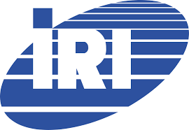

Modelli Economici e Organizzazione d'Impresa
La materia di Gestione Progetto e Organizzazione d'Impresa ci insegna che nessun progetto tecnologico vive isolato, ma deve sempre integrarsi nelle dinamiche economiche e organizzative del mercato. Per comprendere come le aziende e le istituzioni reagiscano ai grandi cambiamenti strutturali, è fondamentale analizzare i modelli economici del passato e in particolare, il più grande shock della storia economica moderna: la crisi del 1929.
Il crollo del 1929 e la fine del "Laissez-faire"
Fino ad allora, l'economia occidentale si era basata sulla teoria classica del liberismo puro (il cosiddetto laissez-faire), secondo cui il mercato era capace di autoregolarsi da solo senza interventi esterni, spinto dalla legge della domanda e dell'offerta. Il 24 ottobre 1929, il "Giovedì nero" della borsa di Wall Street, questo modello fallisce drammaticamente a causa di una sovraproduzione industriale e di una speculazione finanziaria fuori controllo.
La crisi finanziaria si trasforma rapidamente in un circolo vizioso dell'economia reale: la carenza di liquidità porta al fallimento delle banche, le quali bloccano i crediti alle imprese; senza finanziamenti, le fabbriche riducono la produzione o chiudono, licenziando milioni di lavoratori e dimostrando che il mercato, da solo, può scivolare nell'autodistruzione.
La soluzione di Keynes: L'intervento dello Stato
A cambiare le regole del gioco interviene l'economista britannico John Maynard Keynes. La sua teoria ribalta completamente l'approccio classico: se i privati e le imprese non hanno più soldi per investire o assumere, deve essere lo Stato a intervenire direttamente nell'economia per invertire la rotta.
Keynes teorizza la necessità della **spesa pubblica** (anche a costo di fare deficit di bilancio, il cosiddetto deficit spending) per finanziare grandi opere pubbliche, creare posti di lavoro statali e rimettere il potere d'acquisto nelle mani dei cittadini. Questo meccanismo fa ripartire la domanda di beni e i consumi, spingendo le imprese private a riaprire e ad assumere di nuovo. È la nascita del moderno **Welfare State** (Stato sociale), in cui lo Stato si fa carico del benessere economico e sociale dei cittadini.

Il riflesso in Italia: La nascita dell'IRI (1933)
Questo nuovo modo di concepire il rapporto tra Stato ed economia trova un'applicazione pratica e d'emergenza anche in Italia. Le grandi banche nazionali dell'epoca (come la Comit e il Credit) erano "banche miste", che avevano prestato enormi capitali e acquistato azioni delle grandi industrie chimiche, siderurgiche e meccaniche colpite dalla crisi del '29, rischiando il collasso finanziario.
Per salvarle, nel 1933 viene fondato l'**IRI (Istituto per la Ricostruzione Industriale)**, sotto la guida tecnica dell'economista Alberto Beneduce. Lo Stato italiano acquista le quote delle banche in crisi e, di conseguenza, si ritrova a possedere e gestire i più grandi settori industriali del Paese (dalla siderurgia alla cantieristica navale). Quello che doveva essere un ente di salvataggio temporaneo diventa permanente nel 1937, trasformando l'Italia nello Stato con il più grande settore industriale pubblico del mondo occidentale per molti decenni.